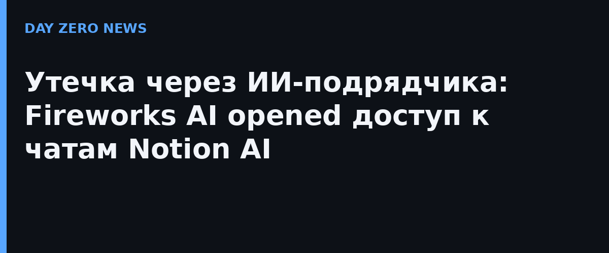

11 ноября Notion опубликовал официальное уведомление: безопасный инцидент у третьего ИИ-вендора затронул записи диалогов с Notion AI. Картина по дням: 23 октября злоумышленники через стороннего облачного провайдера попали в dev-окружение Fireworks AI — разработчика платформы для запуска открытых моделей. Fireworks изначально заявил, что утекли только «синтетические тестовые данные», и уведомил Notion 2 ноября. Но 8 ноября подтвердилось худшее: доступ к данным клиентов всё-таки был, включая данные пользователей Notion.
Пострадал датасет функции Insights — аналитики для администраторов рабочих пространств, которая показывает, как команды используют ИИ. Notion подчёркивает: подавляющее большинство затронутых переписок «неатрибутируемы» — в них не было меток автора и рабочего пространства, а результаты вызовов инструментов в них не сохранялись. Зона поражения — менее 1% пользователей Notion. Сам Notion говорит, что его собственные системы не взломаны: Firewaves использовался для запуска части open-weight моделей в Notion AI и для той самой аналитики. Ущерб от инцидента для Fireworks шире: помимо чатов, злоумышленники получили метаданные ресурсов, биллинговую информацию, веса моделей и датасеты части клиентов, а первым взломом в начале октября были скомпрометированы переменные окружения с API-ключами.
Получив тревогу 2 ноября, Notion мгновенно перекрыл трафик к Fireworks, удалил все свои данные из систем вендора и остановил тренировочные процессы — формально ещё до того, как инцидент признали реальным. Функция Insights отключена. 11 числа Notion добавил в уведомление важный пункт: в ходе расследования в затронутых сообщениях нашли активные API-ключи Notion — их отозвали.
Тем, кто получил уведомление: владельцу рабочего пространства открыть раздел Security incident review в веб-версии Notion и поделиться с участниками ссылкой для выгрузки их переписок. Главный практический совет от самого Notion — ротация: любые пароли, API-ключи и другие креды, которые когда-либо вставлялись в чаты Notion AI в затронутых пространствах, считаются скомпрометированными и должны быть заменены. Если уведомление не пришло ни вам, ни владельцу вашего пространства — вы почти наверняка вне зоны поражения.
Fireworks AI за месяц умудрился получить два взлома подряд, а контрактная обещанная «нулевая retention-политика» для данных Notion не спасла: обещание хранить ничего не равно технической невозможности это сделать. Классический урок про цепочку доверия: ваш ИИ-процессинг живёт у вендора, и его dev-окружение — тоже часть вашей поверхности атаки. Отдельная деталь для тех, кто вставляет секреты в чаты с ИИ: активные API-ключи нашли именно в текстах пользовательских сообщений.